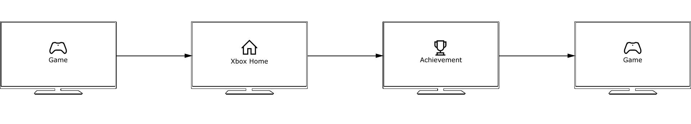
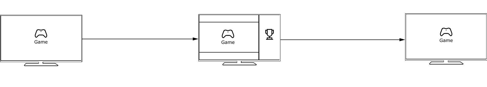
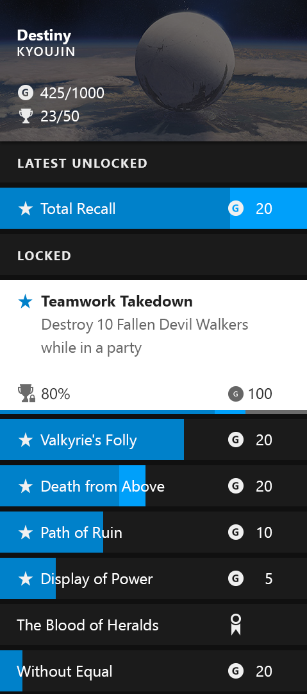
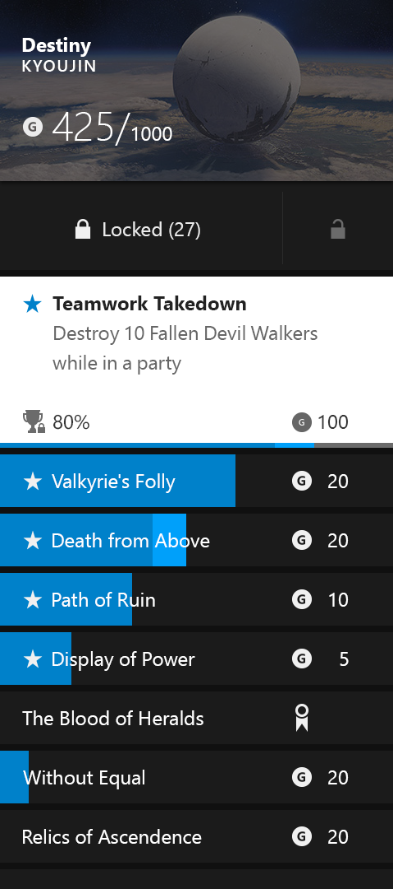
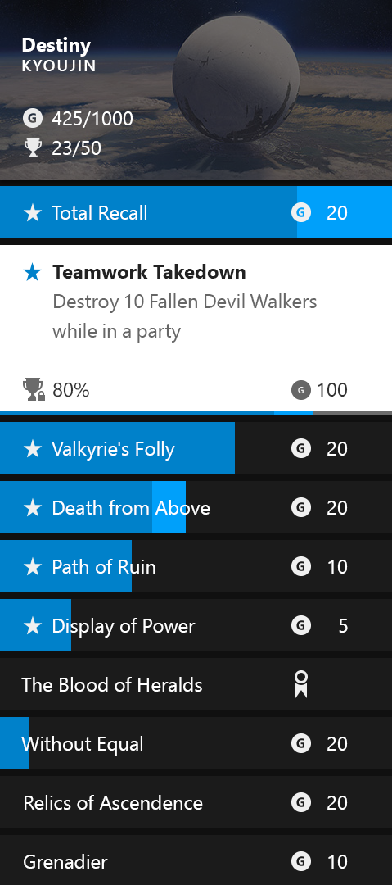
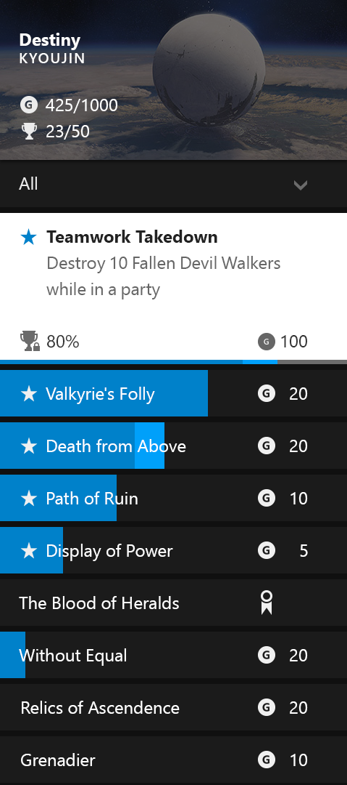
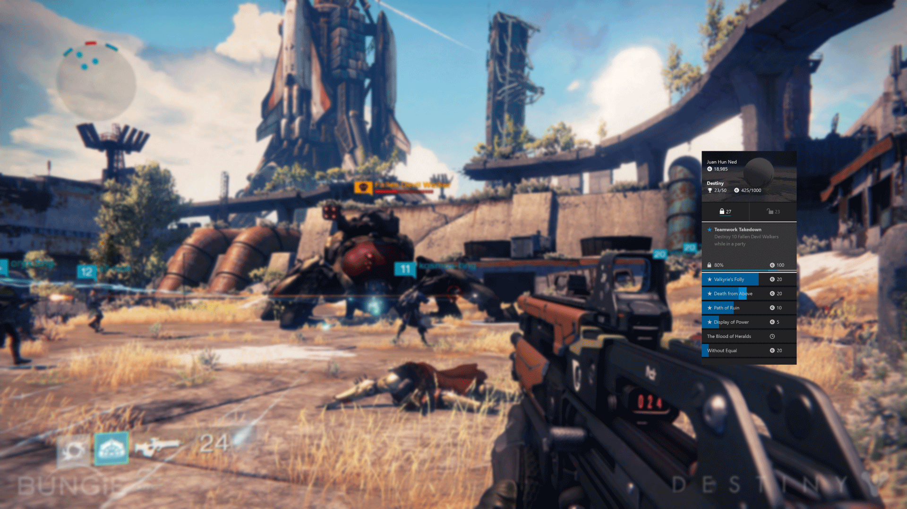

Achievement Hunter
A xbox companion experience in the snap mode to help gamers track their achievements in real time on screen, search for help
on any achievement and look at achievement they just unlock.
Why do we make achievements hunter ?
Previously, viewing achievements of a game is a long journey.
They have to leave the game, go back xbox home, find the achievements app, find that game's achievements to see what they have unlocked and what they want to target next. Creating a snap app of achievements enables gamers to complete the task without leaving the game
Xbox one Provides a multitasking mode called snap which allows gamers to check out stuff without leaving their primary experience. You can playing a game while watching TV. A snap mode of achievements will simply the flows. 
What are gamers' needs?
Recently unlocked achievements
Closest achievements to unlock
Progress in the past game session
How do we prioritize and balance these needs ?
Different interaction models I explored
Section model
An latest unlocked session on the top to showcase the accomplishements

Tab Model
Locked achievements are on the left while unlocked achievements are on the right

Single list model
Unlocked achievements are on the top and users have to scroll up

Filter model
Users can filter down to unlocked and locked achievements

Tab model is the most preferred
A 6-participant testing was conducted and here are the findings
Users preferred the Tab model and the Filter model, and did not understand
the single list model
When asked, users indicated that the most important Achievements information
is: 1. most recently unlocked achievements; and 2. achievements the user is close to unlocking
In terms of ease of use, the tab model provides some distinct usability
advantages, and quicker access to the information which is most important to users

How achievement hunter works in the game context
Becomes one of the most used snap app
%
Usage of achievement full screen app
Most frequently used xbox snap app
Patents filed
Test, test and is it the right solution?
Wireframe samples